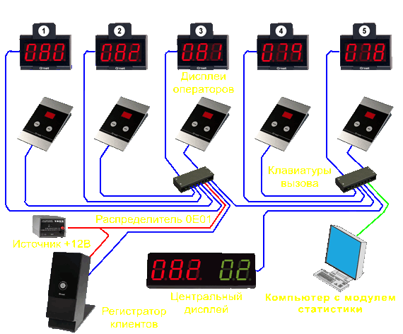
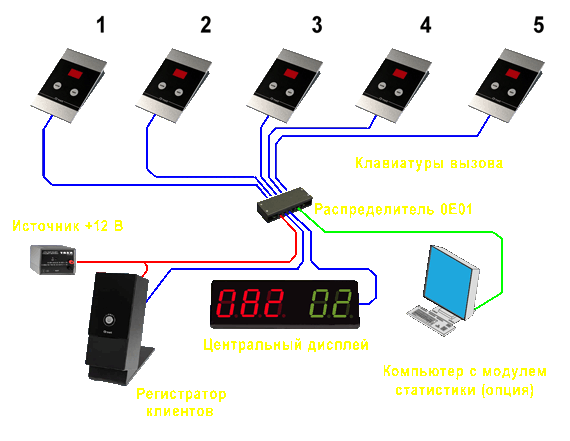

-
Область применения
Типы систем
Типы станций
Общее оборудование
Аксессуары
Транспортировочные средства
Программное обеспечение
-
Область применения
Типы систем
Регистраторы клиентов
Цифровые дисплеи
Клавиатуры вызова
Аксессуары
Программное обеспечение


ТИПЫ СИСТЕМ:
1. Система электронного управления очередью "Q-Net Basic"
2. Система электронного управления очередью "Q-Net Basic Plus"
3. Система электронного управления очередью "Q-Net Standard"
4. Система электронного управления очередью "Q-Net Pro" и "QControl Paleo"
5. Система электронного управления очередью "QControl Neo"
6. Система электронного управления очередью "QControl Mino"
1. СИСТЕМА ЭЛЕКТРОННОГО УПРАВЛЕНИЯ ОЧЕРЕДЬЮ "Q-NET BASIC"
Система "Q-Net Basic" является простейшей системой, обеспечивающей управление потоками клиентов в сервисных компаниях, предоставляющих однотипную услугу на каждом из рабочих мест. Обычно подобная структура системы применяется для обеспечения предоставления одной услуги.
Это самая дешевая реализация системы электронного управления очередью.
Возможности и основные параметры системы:
- отсутствие необходимости использования компьютерного сервера;
- не требует системного администрирования;
- простота использования при работе операторов сервисной компании;
- система и все устройства управляются контроллером, размещенным в регистраторе клиентов;
- звуковое приглашение клиента в момент мигания центрального дисплея посредством срабатывания встроенного в центральный дисплей звукосигнализатора;
- возможность подключения до 16 операторов с клавиатурами вызова и вызывными дисплеями;
- возможность подключения не более одного регистратора клиентов;
- возможность подключения до 8 центральных дисплеев;
- возможность повторного вызова клиентов, невозможность переадресации клиента к другому оператору;
- отображение текущего времени либо количества клиентов, ожидающих очереди, на цифровом табло регистратора клиентов;
- используемые вызывные дисплеи: QN-DN01, QN-DC01, QN-DG01 (до 16 шт.);
- используемые центральные дисплеи: QN-DN05, QN-DG05, QN-DG55 (до 4 линий);
- используемые вызывные клавиатуры: QN-KC01, QN-KC05, QN-KC06 (до 16 шт.);
- используемый регистратор клиентов: QN-TC01 c термобумагой QN-0A01 (ширина/нар.диаметр/вн. диаметр) 58/70/12 mm (около 1000 талонов клиентов);
- акссесуары: стойка крепления вызывных дисплеев QN-0D01 (500 мм), системный источник питания +12 В QN-0B04, распределитель сигналов QN-0E01, модуль статистики для ПК QN-SH02.
Полная структура системы "Q-Net Basic" отображена на Рис.1.1.

Рис.1.1 Структура системы "Q-Net Basic" на пять рабочих мест (полная конфигурация).
По желанию клиента система "Q-Net Basic" может быть использована в сокращенной конфигурации, что несколько снижает ее функциональные возможности и цену. Структура сокращенной системы отображена на Рис. 1.2.

Рис.1.2 Структура системы "Q-Net Basic" на пять рабочих мест (сокращенная конфигурация).